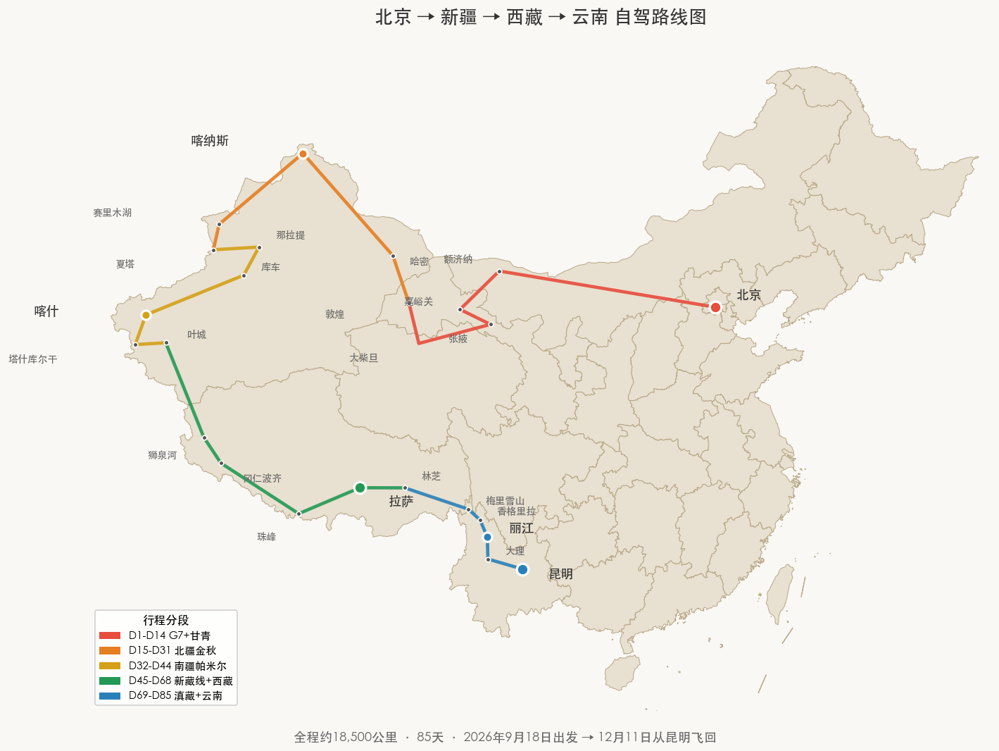

Self-Drive Expedition · 2026 Sept 18 → Dec 11
从北京出发自驾到云南：一路向西的85天
2人床车经济版（7万，人均3.5万）· 4人民宿混合版（11.5万，人均2.88万）· 大5座硬派越野优先·一嗨租车0元异地还车·高速日均≤600km·含甘青大环线+12条徒步+床车/民宿攻略
2人床车经济版（7万，人均3.5万）· 4人民宿混合版（11.5万，人均2.88万）· 大5座硬派越野优先·一嗨租车0元异地还车·高速日均≤600km·含甘青大环线+12条徒步+床车/民宿攻略
主推方案A：一嗨租车北京取→丽江还（异地还车费0元）——2026年一嗨官方宣传"全国直营 异地还车0元"[1]，丽江有直营网点；稳妥方案D：北京取→北京还，最后从云南开回北京（多花6天+约5000元，零异地费风险）。不推荐自己托运租来的车：租车合同一般禁止擅自委托第三方运输，需车主（租车公司）授权。车型推荐：四驱SUV（哈弗H9/坦克300/RAV4四驱），约400-550元/天。出发前务必电话确认是否允许走新藏线G219进阿里。
9月18日出发是综合季节窗口、路况封闭时间、日均驾驶节奏和风景覆盖度后的最优选择：①可以完整走甘青大环线（青海湖、茶卡盐湖、大柴旦翡翠湖、G315U型公路）；②全程高速日均控制在580km以内，仅G7戈壁段有一天680km，适合单人驾驶节奏，副驾全程协助导航陪聊；③10月6-8日刚好赶上喀纳斯/禾木金秋，10月12日前后通过独库公路南段，避开10月中旬封路。
① 彻底消除超长驾驶日：首日660km不疲劳，D2只开250km在巴彦淖尔适应，D3巴彦淖尔→额济纳680km是全程最长但G7车极少；② 加入完整甘青大环线：青海湖、茶卡、翡翠湖、G315全部纳入，D7-D14共8天慢慢走；③ 补上敦煌→哈密→巴里坤入疆路线：经星星峡正式入疆，翻天山走巴里坤草原东疆最美公路，不留路线断点。
关于异地还车费用，核心逻辑是：要么利用一嗨2026年新政策做到真正0元异地还车，要么北京取北京还开回来，不推荐中间托运租来的车（涉及车主授权和保险理赔风险）。以下整理所有可行方案供选择。
| 方案 | 取还方式 | 总租车费 （含全险） | 异地/额外费用 | 总费用估算 | 便利性 | 风险点 |
|---|---|---|---|---|---|---|
| A. 一嗨全程租 （性价比最高） |
北京取→丽江还 | 约3.4-3.9万 (85天×400-460元/天) |
0元异地费 （2026年政策） |
约3.3-3.8万 | 最方便 不搬行李 |
需提前验证0元 需确认进藏许可 |
| D. 北京取还+开回京 （最稳妥零风险） |
北京取→北京还 丽江→北京6天高速 |
约3.6-4.2万 (91天×400-460元/天) |
0元异地费 油费过路费约2500元 6天吃住约1500元 |
约4.0-4.5万 | 最后6天纯赶路 | 无异地费风险 最后段较累 |
| B. 神州全程租 | 北京取→昆明还 | 约3.2-3.8万 | 异地费约1-1.8万 | 约4.2-5.6万 | 方便 | 异地费高，不推荐 |
| C. 分段落地租车 | 飞乌鲁木齐租→喀什还 飞拉萨租→丽江还 云南本地租 |
约2.0-2.5万 （三段合计45-50天） |
新疆段异地费约1500元 藏段异地费约2000-3000元 机票约3000-4000元 |
约2.7-3.5万 | 3次搬行李 没有从北京出发的公路旅行感 |
最省钱 但失去G7穿越大漠体验 |
租来的车辆行驶证登记在租车公司名下，汽车托运需要出示车主身份证/营业执照、行驶证，并由车主签字授权。如果私自托运：①违反租赁合同（一般有"不得擅自交由第三方运输"条款），可能算违约；②运输途中出险，托运保险和租车保险的理赔会非常复杂；③正规托运公司接车时会核对车主信息，非车主本人送车可能被拒运。如果一定要托运，必须提前和租车公司协商由他们安排调运——这本质上就是支付异地还车费。
一嗨租车2026年在各大应用商店的官方介绍明确写有"全国直营 异地还车0元"[1]，丽江有一嗨直营网点（丽江古城/机场/火车站均有）。为避免政策变动或结算争议，请严格按以下步骤操作确认：
车型建议（经济版）：首选燃油经济型四驱SUV（哈弗H6四驱、奇瑞瑞虎8四驱、长安CS75四驱），约280元/天含全险（长租折扣价）。绝对不租纯电车：新藏线G219无人区充电桩几乎为零，10月底高海拔低温续航打5折，半路没电致命；混动车型（如比亚迪宋DM-i）可考虑但租车公司车源少且贵，不如油车稳妥。如取车时免费升级到哈弗H9/坦克300等硬派越野最好，但不要主动加钱升级（贵50%）。新藏线G219大部分已铺装柏油路，经济型四驱+防滑链足够应对10月底路况。必须携带防滑链（买或租，200-400元）。提车时务必检查：轮胎花纹深度（>4mm）、备胎是否完好、千斤顶和换胎工具是否齐全；确认超级补充全险含全国道路救援。
取车细节：建议9月17日下午提前1天在北京取车（多付1天租金约400元），这样9月23日一早可以直接出发，不耽误时间。还车地点选丽江古城网点或丽江三义机场网点，还车后直接飞北京（丽江→北京机票12月约800-1500元）。
如果对0元异地还车政策始终不放心（比如担心还车时临时加收费用），这是最稳妥的方案——北京取车、北京还车，全程不换车，零异地费风险。代价是最后6天要从丽江开回北京（约2800km全高速）。
返程路线（6天，日均470km，全高速）：
额外成本：租车多6天约2500-3000元 + 返程油费过路费约2500元 + 6天吃住约1500元 = 合计多花约6500-7000元。好处是完全无异地费争议，返程可以顺路在成都/西安停留吃美食。如果选这个方案，总行程91天。
高速/国道段（G7、G30等平原/戈壁路段）：每天500-600km，约6-8小时（含休息）。早7点出发，下午4-5点必须收车，保证天黑前到住宿点。
山路/景观路段（独库、新藏线、滇藏线、盘山路）：每天200-350km，约6-8小时。弯道多、限速多（30-60km/h）、停车拍照多、高反影响反应速度，不能赶。
高海拔路段（新藏线4500m+）：每天不超过250km，感觉头痛/疲劳立即停车休息，绝不硬撑。
三条铁律：①每2小时进服务区/停车带休息15分钟；②绝不夜间开山路（西部虽然9点天黑，但山路6点后光线就差了）；③连续驾驶4天必须安排1天"只玩不开车"的休整日（本行程已在喀纳斯、喀什、拉萨、丽江各安排休整）。
驾驶节奏按日均500-600km高速设计。原规划首日880km偏长，已调整为：D1北京→包头（约660km，7-8小时），D2包头→巴彦淖尔（250km，轻松适应长途节奏），D3巴彦淖尔→额济纳680km是全程最长的一天（G7段车少路直、精神压力小），之后所有高速日均控制在580km以内。如觉得680km仍偏长，可在D3中途乌力吉苏木住一晚（条件一般），D4再到额济纳，但会少半天额济纳游览时间。
路线逻辑：从北向南追着秋天走。先到额济纳看胡杨（10月初），再到喀纳斯看金秋（10月3-6日），赶在封路前走独库（10月8日前），然后南疆帕米尔（10月中旬），10月底前穿新藏线到西藏，11月拉萨-林芝走滇藏线到云南，11-12月在云南享受旱季徒步天堂。

flowchart LR
A[北京] --> B[G7大漠·巴彦淖尔]
B --> C[额济纳·胡杨初秋色]
C --> D[嘉峪关·张掖丹霞]
D --> E[祁连大草原·G227最美国道]
E --> F[西宁·青海湖·茶卡盐湖]
F --> G[德令哈·大柴旦翡翠湖·G315U型公路]
G --> H[敦煌·莫高窟·鸣沙山]
H --> I[哈密·巴里坤草原]
I --> J[喀纳斯·禾木金秋]
J --> K[赛里木湖·伊宁·特克斯]
K --> L[独库公路南段
10月10日前]
L --> M[库车·喀什·帕米尔]
M --> N[G219新藏线·阿里·冈仁波齐]
N --> O[珠峰·日喀则·拉萨]
O --> P[林芝·然乌湖]
P --> Q[G318+G214滇藏线·梅里雪山]
Q --> R[雨崩徒步·虎跳峡·丽江]
R --> S[大理·昆明
高铁/大巴]
S --> T{{方案A：丽江/昆明还车
飞回北京 ✅推荐}}
R -.->|方案D：不想异地还车
多花6天+约5000元| U[成都·西安·太原]
U -.-> V{{方案D：北京还车}}
style A fill:#C75B39,color:#fff,stroke:none
style T fill:#4A7C59,color:#fff,stroke:none
style V fill:#D4880F,color:#fff,stroke:4px,stroke-dasharray:5 5
style E fill:#5B7FA6,color:#fff,stroke:none
style F fill:#5B7FA6,color:#fff,stroke:none
style G fill:#5B7FA6,color:#fff,stroke:none
style L fill:#D4880F,color:#fff,stroke:none
style N fill:#8B5E3C,color:#fff,stroke:none
style O fill:#8B5E3C,color:#fff,stroke:none
9月18日出发预留了充足时间，完整走张掖→祁连→门源→西宁→青海湖→茶卡→德令哈→大柴旦→G315→敦煌这条经典甘青环线，覆盖：祁连大草原（9月底金黄）、青海湖（湛蓝+湖畔草原金黄）、茶卡盐湖（天空之镜）、大柴旦翡翠湖（比茶卡更惊艳的绿色盐湖）、G315U型公路（中国版66号公路）、乌素特水上雅丹（远观免费，不进景区）。9月底的甘青避开了7-8月旺季人潮，住宿便宜一半，天气秋高气爽。
※ 方案D（北京取还）：D86-D91从丽江开回北京（6天，约2800km高速），总91天。
从北京出发走G6/G7，穿越内蒙古河套平原，正式踏上G7京新高速——世界最长沙漠高速公路[7]。9月中旬出发可以从容开局，D2只开250km在巴彦淖尔适应长途节奏，D3巴彦淖尔→额济纳680km是全程最长的一天（G7车少路直、精神压力小）。
这是新增的精华段！走G227"中国最美国道"翻越祁连山，经过青海湖、茶卡盐湖、大柴旦翡翠湖、G315U型公路、水上雅丹，再经柴达木盆地到敦煌。9月底的甘青天高云淡、草原金黄、游客稀少，是最佳季节。
10月6-8日是喀纳斯金秋的最后窗口，10月9日后叶子大量脱落[3]。经星星峡入疆，翻天山到巴里坤草原，再奔布尔津/喀纳斯。这段路山路多、限速多，景区需换乘区间车。
徒步 喀纳斯三湾木栈道（8km，初级，D20）徒步 禾木美丽峰（15km往返，中级，D21）
2025年是10月10日20时封闭[2]，2026年预计类似。按当前行程D25（10月12日）走独库南段，需密切关注实时封路公告。如果10月11日晚从特克斯出发经那拉提到巴音布鲁克住一晚（D24延长），10月12日一早走独库南段到库车，如遇降雪封路则走G218经库尔勒绕行多400km。
新藏线10月下旬已可能遇降雪，携带防滑链、每天关注天气。2025年6月隧道通车后路况大幅改善[8]，但高反是最大敌人。每天控制在300km以内，不在5000m+海拔过夜（死人沟/泉水湖绝对不能住）。
高级徒步 外转经52km，3天，卓玛拉垭口5648m。2026年藏历马年，转山人数是常年3倍[9]。10月底转山夜间温度-15°C至-20°C，必须带冰爪、-20°C睡袋、羽绒。
11月丙察察三座高海拔垭口（益秀拉4706m等）已积雪严重，风险高[10]。G318+G214滇藏线是最成熟的出藏路线，全年通车，全程柏油铺装，11月不封山，而且经过然乌湖、怒江72拐、梅里雪山，风景一流。
在丽江还车后，云南高铁网络非常方便（昆明-大理-丽江已通高铁，2小时到大理），不需要再开车。可以彻底放松，不用考虑驾驶疲劳、停车、加油。连续驾驶约18000km后，云南段适合放慢节奏休整。若希望自驾云南最后一段，可将还车点改到昆明（昆明是一嗨大网点，异地费为0的概率更高），多开10天云南环线再还车。
白天15-20°C，夜间5-10°C，旱季几乎不下雨，天高云淡，能见度全年最佳。是云南旅游的黄金时段，而且避开了国庆和春节人潮。
从昆明/丽江飞回北京：机票约800-1500元/人（淡季便宜），3.5小时。
如果还有时间和精力，可以继续去元阳梯田（12月灌水期）、西双版纳（避寒），但建议在大理/丽江结束这趟旅行——85天已经非常充实了。
因增加甘青大环线和哈密/巴里坤两天，全程得以安排祁连卓尔山、赛里木湖环湖、纳木错、来古冰川等轻徒步路线（夏塔因时间紧张放弃）。全程累计徒步约150km+，从初级休闲徒步到高级高海拔转山都有覆盖。
| 徒步路线 | 位置 | 天数/距离 | 最高海拔 | 难度 | 时间 |
|---|---|---|---|---|---|
| 乌梁素海环湖栈道 | 内蒙古 | 半天/5km | 1000m | ★☆☆☆☆ | 9月19日 |
| 卓尔山徒步环线 | 青海祁连 | 半天/6km | 3100m | ★☆☆☆☆ | 9月25日 |
| 青海湖黑马河徒步 | 青海 | 半天/8km | 3200m | ★☆☆☆☆ | 9月27日 |
| 喀纳斯三湾木栈道 | 新疆 | 半天/8km | 1400m | ★☆☆☆☆ | 10月7日 |
| 禾木美丽峰 | 新疆 | 1天/15km | 1800m | ★★☆☆☆ | 10月8日 |
| 赛里木湖环湖徒步 | 新疆 | 半天/10km | 2070m | ★☆☆☆☆ | 10月10日 |
| 夏塔古道徒步 | 新疆昭苏 | 1天/12km | 2800m | ★★☆☆☆ | 时间紧已放弃 |
| 冈仁波齐转山 | 西藏阿里 | 3天/52km | 5648m | ★★★★★ | 10月28-30日 |
| 珠峰大本营-绒布寺 | 西藏 | 半天/8km | 5200m | ★★★☆☆ | 11月1-2日 |
| 纳木错环湖徒步 | 西藏当雄 | 半天/6km | 4700m | ★★☆☆☆ | 11月5日（可选，拉萨出发当日往返） |
| 来古冰川徒步 | 西藏八宿 | 半天/6km | 4200m | ★★☆☆☆ | 11月10日 |
| 雨崩冰湖+神瀑+尼农 | 云南 | 3天/41km | 3800m | ★★★☆☆ | 11月14-17日 |
| 虎跳峡高路 | 云南 | 2天/20km | 2700m | ★★☆☆☆ | 11月20-21日 |
| 苍山玉带路 | 云南大理 | 1天/12km | 2600m | ★★☆☆☆ | 12月初 |
85天共84个晚上，其中三大块必须住店、没法省：①新藏线+阿里高海拔（3500m+）约13晚，夜间-10°C至-20°C，睡车有失温/高反风险，不能省；②车进不去的景区（喀纳斯/禾木/雨崩/虎跳峡徒步中）约8晚，车停在景区外必须住村里客栈；③丽江还车后云南段19晚，没车=没法床车。这三项加起来就40晚了。其余城市停靠点（包头、敦煌、伊宁等）采用床车+洗浴中心洗澡（30-50元/人）的方式，不住店也能解决清洁问题。
84晚全程住店 · 12晚宾馆2间标间+72晚两居室/三居室民宿（有厨房能做饭） · 大5座硬派四驱越野（坦克300/哈弗H9/途达）· 4人分摊车费 · 建议至少2人会开车 · 丽江还车 · 人均约28,750元
4人版核心思路：租大5座硬派四驱越野（而非7座SUV），4个人坐5座完全不挤，后备箱放行李+装备，通过性比城市SUV好很多，新藏线/丙察察/独库公路更安全。全程住店不床车：新藏线偏远地区住宾馆2间标间，其余72晚全部住两居室/三居室整套民宿（有厨房能做饭、有客厅能休息、能洗衣服），比开2间酒店标间还划算。租车/油费/装备4人分摊后人均比2人版便宜6,250元，还不用睡车上，舒服很多。
| 项目 | 4人合计 | 人均 | 计算依据 |
|---|---|---|---|
| 租车（85天含全险） | 34,000 | 8,500 | 大5座硬派四驱越野（坦克300/哈弗H9/日产途达级），一嗨长租约400元/天含超级补充全险；400×85=34,000；4人分摊人均仅8,500 |
| 油费 | 14,000 | 3,500 | 硬派越野高原综合油耗约10L/100km（和7座SUV差不多）；18,500×0.10×7.6≈14,000 |
| 过路费（ETC） | 3,000 | 750 | 同2人版，与人数无关 |
| 住宿（84晚全住店） | 25,000 | 6,250 | 新藏线偏远地区12晚：宾馆2间标间7,680；其余72晚：两居室/三居室民宿（有厨房能做饭）约240元/套×72=17,280；合计约25,000元，4人都能洗澡睡床，不用睡车上 |
| 餐饮 | 14,000 | 3,500 | 有车64天自炊38元/人/天（不省食材钱：每天有肉有蛋有奶有水果，买好肉好果，比小馆子吃的舒服还卫生）=9,728；还车后20天云南段外食40元/人/天（米线/小馆）=3,200；每10天左右一顿下馆子吃特色约1,072；合计14,000 |
| 门票+区间车 | 9,600 | 2,400 | 同2人版×4人=4,800×2=9,600 |
| 装备 | 3,700 | 925 | 4个-10°C睡袋1,400（宾馆被子不够时加一层）+大卡式炉150+户外高压锅+套锅+烧水壶280（高原必须用高压锅）+菜板锅铲60+不锈钢碗筷勺4人份50+气罐30+保温冷藏箱120+洗涤/消毒60+汽车遮阳帘100+2个折叠水桶80+头灯4个+营灯2个200+折叠桌+4椅400+2个储物箱200+尿袋急救包120+逆变器200+压缩袋/打包带50=3,700 |
| 防滑链+高反药+氧气 | 1,900 | 475 | 大尺寸越野胎防滑链300+高反药400（4人份）+氧气罐1,200（4人用量，县城买） |
| 异地还车费 | 0 | 0 | 同2人版 |
| 云南交通（还车后） | 2,000 | 500 | 火车+大巴约500/人×4 |
| 机票（丽江→北京） | 3,200 | 800 | 淡季800/人×4 |
| 旅行保险 | 1,200 | 300 | 户外险300/人×4 |
| 徒步应急 | 800 | 200 | 4人骑马备用 |
| 机动/应急 | 2,600 | 650 | 覆盖车辆小修、滞留住宿等突发情况，4人平摊足够 |
| 合计 | 约115,000元 | 约28,750元/人 | 约1,353元/天（4人），人均约338元/天（比2人版便宜6,250元，全程住店不委屈） |
| 住宿类型 | 晚数 | 安排 | 价格 |
|---|---|---|---|
| 宾馆标间×2间（新藏线偏远地区） | 12晚 | 三十里营房、大红柳滩、玛旁雍错、仲巴、萨嘎等新藏线高海拔偏远地区，没有民宿，只有简易宾馆/招待所，选有供暖/电热毯/独立卫浴的标间，开2间 | 320元/间×2间×12晚=7,680 |
| 两居室/三居室整套民宿（推荐） | 72晚 | 甘青大环线、北疆（喀纳斯/禾木/布尔津）、伊犁（伊宁/特克斯）、南疆（喀什/库车）、拉萨/日喀则、滇藏线（林芝/香格里拉）、云南段（丽江/大理/昆明）等所有有民宿的地方，优先选整套两居/三居，有厨房能做饭、有客厅能休息、能洗衣服，比开2间酒店标间还划算 | 平均约240元/套×72晚=17,280（淡季价格：县城150-200，景区250-350，加权平均240） |
| 合计 | 84晚 | 约24,960≈25,000元（全程住店，每天都能洗澡充电睡床，民宿有厨房可自炊省饭钱） | |
出发前在北京迪卡侬/淘宝/拼多多一次性买齐，沿途县城补充气罐等耗材；全程住店不需要充气床垫/全车隐私帘等床车装备
| 类别 | 物品 | 数量 | 单价 | 小计 | 购买渠道 |
|---|---|---|---|---|---|
| 睡眠系统 | -10°C~-15°C信封式睡袋（可拼接） | 4个 | 350元 | 1,400元 | 迪卡侬TREK500/黑冰G700，宾馆被子不够厚时加一层 |
| 保暖抓绒内胆（睡袋里加一层） | 4个 | 50元 | 200元 | 迪卡侬，新藏线-20°C也够用 | |
| 炊具系统 | 大火力卡式炉（3.5kW以上） | 1个 | 150元 | 150元 | 岩谷/脉鲜，高原能正常用 |
| 户外高压锅（2-3L，高原必备） | 1个 | 130元 | 130元 | 铝合金户外高压锅，卡式炉上10分钟焖好米饭，海拔5000m也能用 | |
| 户外套锅（炒锅+汤锅+煎锅） | 1套 | 80元 | 80元 | 火枫/爱路客，铝合金轻便（1斤多），带锅盖 | |
| 不锈钢烧水壶（1L） | 1个 | 50元 | 50元 | 卡式炉上2分钟烧开，泡茶泡咖啡泡面 | |
| 小菜刀+塑料/竹菜板+锅铲+汤勺+削皮刀 | 1套 | 60元 | 60元 | 菜刀可以从家里带小菜刀，其他超市买 | |
| 304不锈钢碗筷勺杯4人份 | 1套 | 50元 | 50元 | 轻便耐摔，不要带陶瓷/玻璃餐具 | |
| 250g丁烷气罐（首购4个，沿途补给） | 4个 | 8元 | 30元 | 县城五金店/户外店都有，8-10元/罐 | |
| 食材储存 | 25L保温冷藏箱（放肉/蛋/蔬菜） | 1个 | 120元 | 120元 | 淘宝/迪卡侬，晚上冻几瓶水当冰袋 |
| 密封保鲜盒+保鲜袋 | 1套 | 30元 | 30元 | 超市 | |
| 洗漱清洁 | 折叠水桶（15L，装水/洗菜） | 2个 | 40元 | 80元 | 迪卡侬/淘宝 |
| 洗洁精+自己的洗碗布/钢丝球 | 1套 | 20元 | 20元 | 不用民宿/宾馆的抹布，自己带干净 | |
| 84消毒液泡腾片 | 1瓶 | 15元 | 15元 | 消毒锅具、餐具、擦桌子，不占地方 | |
| 垃圾袋+纸巾+湿纸巾 | 若干 | 25元 | 25元 | 多带点垃圾袋，路上产生垃圾自己带走 | |
| 隐私/遮阳 | 汽车遮阳帘（侧窗+后挡） | 1套 | 100元 | 100元 | 淘宝，开车挡太阳、临时换衣服用，不用买贵的全车磁吸隐私帘 |
| 照明系统 | LED头灯（红光模式不晃眼） | 4个 | 35元 | 140元 | 迪卡侬/奈特科尔 |
| 营地灯（磁吸挂车顶） | 2个 | 30元 | 60元 | 淘宝 | |
| 桌椅系统 | 铝合金折叠桌（1.2m） | 1张 | 150元 | 150元 | 迪卡侬/淘宝 |
| 折叠月亮椅 | 4把 | 60元 | 240元 | 迪卡侬，坐4-5小时不塌 | |
| 储物/安全/其他 | 折叠储物箱（放装备/食材） | 2个 | 100元 | 200元 | 淘宝，带盖能当凳子坐 |
| 睡袋压缩袋（4个） | 1套 | 30元 | 30元 | 压缩后睡袋只有A4纸大小，省很多空间 | |
| 行李打包带/弹力绳 | 若干 | 40元 | 40元 | 固定行李，防止刹车时东西乱飞 | |
| 应急尿袋+一次性马桶袋 | 20个 | 3元 | 60元 | 淘宝，新藏线几百公里没厕所必备 | |
| 急救包（创可贴/碘伏/绷带/感冒药/肠胃药） | 1个 | 60元 | 60元 | 药店/迪卡侬 | |
| 车载逆变器（12V转220V，300W） | 1个 | 200元 | 200元 | 给电脑/相机/手机充电 | |
| 合计 | 3,700元 | 出发前一次性采购 | |||
有车64天自炊，人均38元/天（4人合计152元/天），钱主要花在买好食材上（新鲜肉、应季水果、牛奶酸奶鸡蛋管够），不常下馆子，自己做比小馆子吃得舒服还卫生；还车后20天云南段外食，人均40元/天；每10天左右一顿下馆子吃当地特色（想下就下，不想下就自己做）
| 餐次 | 方案 | 4人花费 | 采购说明 |
|---|---|---|---|
| 早餐 | 粥/面条+鸡蛋2个/人+牛奶/酸奶+小咸菜，偶尔加火腿肠/罐头鱼/酱牛肉，配点水果 | 约30元 | 前一天晚上用高压锅预约焖粥，或者煮挂面/鸡蛋面；鸡蛋县城菜市场买新鲜的（约1元/个，8个8元）；常温牛奶/酸奶整箱买（约3-4元/盒，4盒14元）；挂面/大米从家里带或者县城买好米，不买最便宜的 |
| 午餐 | 路上吃：馕/面包+酱牛肉/卤肉/火腿肠+黄瓜/番茄/小萝卜+应季水果（葡萄/西瓜/苹果/橘子）+热水泡茶/挂耳咖啡 | 约40元 | 新疆的馕3-5元/个买4个能放一周；酱牛肉/卤肉在县城卤菜店买现切的（约40元/斤，买半斤20元）；黄瓜番茄小萝卜洗好带着生吃；水果按季节买当地产的（新疆葡萄/西瓜超便宜还甜，云南水果也多）；挂耳咖啡/茶包带够，开车提神 |
| 晚餐（重点，不省钱） | 顿顿有肉：青椒炒肉/回锅肉/番茄炒蛋/土豆炖牛肉/红烧鸡块/葱爆羊肉+炒2个应季青菜+蛋花汤/紫菜汤，主食米饭/馒头/面条，每周做2-3次硬菜（大盘鸡/火锅/红烧排骨/手抓饭/炖羊肉），饭后水果+酸奶 | 约90元 | 买新鲜的猪肉/鸡肉/牛羊肉（约35-40元/顿，不买不新鲜的便宜肉）；应季青菜约20元（2个菜，菜市场买当地菜新鲜便宜）；鸡蛋+调料+米/面约10元；做硬菜的时候肉买多一点约加20元；水果/酸奶约20元（每天都有）；调料从家里带常用的（酱油/醋/盐/糖/花椒大料），小瓶子分装不占地方 |
| 零食饮料 | 坚果/巧克力/牛肉干/饼干/功能饮料/矿泉水/啤酒（晚上喝一点） | 约30元/天 | 县城超市一次性买齐，开车累了补充体力，晚上停车休息喝一点放松，不用省这个钱 |
| 下馆子（可选） | 每10天左右吃一顿当地特色：新疆烤串+大盘鸡、敦煌驴肉黄面、藏式牦牛肉火锅、云南菌子火锅/腊排骨，想什么时候吃就什么时候吃，不固定频率 | 约150-250元/顿 | 4个人分菜吃很划算，一顿200元左右人均50元，主要是尝当地特色，平时自己做的不比馆子差 |
| 日均合计 | 自炊日约152元（4人）→ 人均约38元（肉蛋奶水果零食都够，不委屈肚子）；含偶尔下馆子摊薄约38元/人/天，食材买好的，不省嘴 | ||
采购节奏：每2-3天在县城菜市场/超市大采购一次（肉/蛋/菜/水果/零食）；偏远地区（新藏线）提前在叶城/狮泉河备够3-4天的物资；气罐沿途县城五金店/户外店补充（8-10元/罐），不用带太多；保温箱晚上放几瓶冻成冰的矿泉水，能保持低温2-3天，肉不会坏。
原则：大家电/易碎品不带，住民宿用电用民宿的；户外做饭用卡式炉+户外锅，轻便耐造
| 家里现有 | 带不带？ | 原因 | 替代方案 |
|---|---|---|---|
| 小铁锅（1-2斤，轻便的） | 可以带 | 小铁锅炒菜比户外铝合金锅好吃，用毛巾包好放储物箱不会颠坏 | 户外套锅里的铝合金炒锅也能用，就是炒菜不如铁锅香 |
| 大铁锅（3斤以上的家用炒锅） | 不带 | 太重，容易生锈，卡式炉火力小厚铁锅加热慢 | 用户外套锅的炒锅就行 |
| 电饭煲/电压力锅 | 不带 | 需要500-1000W大功率电，车载逆变器300W带不动；太重（5-8斤）占地方；陶瓷/不粘内胆颠簸路上极易颠碎；住民宿90%都有电饭煲，直接用民宿的 | 买户外高压锅（2-3L，1斤多重，130元），卡式炉上10分钟焖好米饭、炖肉，海拔5000m也能用，这是高原必备 |
| 电烧水壶 | 不带 | 需要220V电，功率大 | 买个户外不锈钢烧水壶（1L，50元），卡式炉上2分钟烧开，泡茶泡咖啡泡面都能用 |
| 电磁炉 | 完全不带 | 车上没大功率市电，带了也用不了 | 住民宿的时候民宿一般都有燃气灶/电磁炉，用民宿的就行；户外用卡式炉 |
| 陶瓷餐具/玻璃杯子 | 绝对不要带 | 太重、颠簸路上必碎，碎了还容易划伤人 | 买304不锈钢碗/盘/杯子（4人份约50元），或者密胺（仿瓷）餐具，轻便耐摔；家里如果有不锈钢餐具可以直接带，不用买新的 |
| 菜刀/菜板 | 带家里的小菜刀+小菜板 | 家里的菜刀比户外折叠刀好用太多，切肉切菜都顺手，用毛巾包好放储物箱不会晃 | 小菜刀+竹/塑料小菜板即可，不用买户外专用 |
总结：可以从家里带的：小菜刀、小菜板、小铁锅（如果有轻便的）、家里的不锈钢餐具；需要新买的：卡式炉+户外高压锅+套锅+烧水壶+不锈钢餐具（如果家里没有），总共约400元；电饭煲/电压力锅/大铁锅/陶瓷玻璃餐具都不带；住民宿优先用民宿厨房的电器，户外用自己的卡式炉。
完全不用勉强用民宿厨房，我们自己带了全套卡式炉+锅具，在任何地方都能做饭，有多重选择
| 方案 | 做法 | 卫生程度 |
|---|---|---|
| 方案1：用自己的锅，不用民宿的 | 在民宿的餐桌上/院子里/阳台，用自己带的卡式炉+自己的高压锅/套锅做饭，只用民宿的桌子和水电，完全不用民宿的锅碗瓢盆 | ★★★★★ 最卫生，自己的锅自己洗 |
| 方案2：用民宿厨房，自己彻底消毒 | 选民宿时看评价，优先选"厨房干净"、"房东爱干净"的；入住后先烧一锅开水把要用的锅/菜板/筷子全部烫5分钟；自己带一块洗碗布+一小瓶洗洁精，不用民宿的抹布 | ★★★★ 比较卫生，只要自己烫过就没问题 |
| 方案3：在户外做饭（推荐天气好时） | 景区停车场、县城公园、湖边/草原等风景好的地方，支起折叠桌椅，用卡式炉做饭，边看风景边吃饭，体验感最好 | ★★★★★ 自己的装备，风景还好 |
| 方案4：觉得不干净就直接下馆子 | 反正预算里每周都有1-2顿下馆子的钱，如果当天的住宿厨房实在看不下去，就直接去当地小馆吃，多花几十块钱而已，不用纠结 | ★★★ 不用自己做，但外面的饭也不一定比自己做的干净 |
装备补充建议：可以带一小瓶84消毒液泡腾片（十几块钱一瓶），用的时候泡一片在水里，烫锅、擦桌子、消毒餐具都能用，不占地方还安心。
坦克300/哈弗H9后备箱常规容积约550L，后排放倒扩展到1600L+，4人行李+装备完全放得下
| 位置 | 放什么 | 空间说明 |
|---|---|---|
| 后备箱底层 | 2个折叠储物箱（约60L×2）：一个放炊具/食材/调料，一个放工具/急救/防滑链/杂物 | 储物箱带盖，上面可以叠放其他东西，拿取方便 |
| 储物箱上面 | 4个人的行李：用软包/登山包/旅行包，不要用硬壳行李箱！软包可以挤压，能塞下更多 | 4个60L登山包竖着放，完全够；每人一个包装个人衣物/洗漱用品/电子产品 |
| 后备箱两侧/缝隙 | 折叠桌椅（折叠后很薄，约5cm厚）、折叠水桶、雨伞、拖车绳 | 塞在缝隙里不占地方 |
| 后排座位脚下 | 保温冷藏箱、饮用水（整箱矿泉水）、常用零食、当天要用的东西 | 脚下空间很大，放重物还能降低重心 |
| 车顶行李架（可选） | 如果东西实在多，可以租/买个车顶行李箱（约500L），放不常用的大件（折叠桌椅、备用油桶等） | 不是必须的，4人东西不多的话完全不用 |
| 午休/应急（不用于过夜） | 开长途累了可以把后排放倒，铺个垫子在车里躺一会儿午休；万一遇到极端情况（封路滞留、找不到住宿）也能临时凑合一晚，但平时全程住店，不用特意买充气床垫 | 带个薄垫子或者直接用睡袋铺着就行 |
| 关键技巧 | 1. 用软包代替硬壳箱子（能省30%空间）；2. 睡袋用压缩袋（压缩后每个只有A4纸大小）；3. 重物放底层/脚下（降低重心更安全）；4. 常用东西放容易拿的位置（不用每次翻箱倒柜） | |
| 景点 | 门票+区间车（单人） | 4人合计 | 备注 |
|---|---|---|---|
| 额济纳胡杨林（黑城弱水+居延海） | 240元 | 960元 | 9月下旬门票约200+区间车40 |
| 张掖七彩丹霞 | 75元 | 300元 | 门票54+区间车21（淡季价） |
| 嘉峪关关城 | 110元 | 440元 | 门票+区间车 |
| 莫高窟（应急票） | 100元 | 400元 | 10月下旬应急票100元看4个窟；正常票238元需提前1个月抢 |
| 鸣沙山月牙泉 | 110元 | 440元 | 门票3天有效 |
| 喀纳斯+禾木 | 340元 | 1,360元 | 喀纳斯160+区间车110=270；禾木50+区间车52=102；合计约370，取340（淡季可能降价） |
| 赛里木湖 | 145元 | 580元 | 门票70+区间车75；自驾车进入需另购车票约145/人 |
| 夏塔古道 | 80元 | 320元 | 门票40+区间车40 |
| 古格王朝遗址 | 200元 | 800元 | 门票+观光车 |
| 冈仁波齐转山 | 150元 | 600元 | 门票150元 |
| 珠峰大本营 | 400元 | 1,600元 | 门票160+区间车120+环保费/进山费约120 |
| 布达拉宫（淡季） | 100元 | 400元 | 11月后淡季100元，旺季200元需预约 |
| 雨崩村 | 260元 | 1,040元 | 门票55+越野车进村200左右 |
| 虎跳峡（高路徒步） | 45元 | 180元 | 门票45元，徒步不另收费 |
| 合计 | 约2,400元/人 | 约9,420≈9,600元 | 实际可能因淡季/学生票/部分景区不去有所浮动 |
* 注意：以上为估算价格，10-12月属于淡季，部分景区门票可能半价或免票；如果部分景点不想去可以省几百到上千元；4人带学生证（如有）还能再省约20%。
⚠️ 风险提示：本预算按"0元异地还车费"计算，但我不能100%保证2026年9月一定免异地费。一嗨/神州的免异地还车费是季节性促销政策，会随时间调整，出发前1-2个月（2026年7-8月）才能确认。不要默认一定免费，必须按以下步骤验证！
为什么推荐北京取丽江还（而不是开回北京）？
出发前必做验证步骤（2026年7-8月执行）：
| 步骤 | 操作 | 注意事项 |
|---|---|---|
| 1 | 打一嗨客服电话400-888-6608，人工服务 | 不要用在线客服，说不清楚；同时也打神州租车400-616-6666对比价格 |
| 2 | 询问："北京取车，丽江还车，85天长租，9月18日取12月11日还，坦克300/哈弗H9，是否有异地还车费？" | 明确说清取还城市、日期、车型、时长 |
| 3 | 如果客服说免异地费，要求发送书面确认（短信/邮件/APP内消息） | 口头承诺不算，必须有文字凭证 |
| 4 | 通话全程录音（手机开启录音功能） | 万一后续有纠纷有证据 |
| 5 | 下单后在订单详情页确认"异地还车费"显示为0元，截图保存 | 取车时再和门店工作人员确认一次 |
如果有异地费的备选方案：
| 异地费金额 | 应对方案 |
|---|---|
| ≤3,000元 | 还是北京取丽江还，比开回北京（多花4,000-5,000元）还是划算 |
| 3,000-5,000元 | 问昆明/大理还车多少钱，昆明作为省会城市异地费往往更低；昆明还车后坐高铁去丽江玩（昆明→丽江高铁3小时，200元/人） |
| 5,000-8,000元 | 比较"异地费+机票"vs"开回北京的油费过路费住宿费"哪个便宜；如果差不多，考虑分段租车（新疆租一段、西藏租一段、云南租一段） |
| >8,000元 | 考虑在拉萨还车，坐火车到云南，或者改其他方案；这种概率极低，热门旅游航线一般不会这么贵 |
* 机动费里已经预留了部分空间应对可能的异地费差额，不用太担心。
5个人大5座越野坐5人理论上可以，但85天长途满载行李+装备+食材会比较挤，建议以下两个方案：
| 对比项 | 方案A：两辆大5座越野 | 方案B：一辆9座MPV床车（最省） |
|---|---|---|
| 车型 | 2辆坦克300/哈弗H9级硬派越野 | 1辆福特全顺/大通V80（C本可开9座） |
| 租车费 | 34,000×2=68,000元 | 500元/天×85=42,500元 |
| 油费 | 14,000×2=28,000元 | 18,500×0.12×7.6≈17,000元 |
| 过路费 | 3,000×2=6,000元 | 3,500元（9座高速费略高） |
| 住宿 | 按4人版×1.25，约50,000元（2-3间房） | 后排放平能睡3-4人，只需要1-2间房，约22,000元 |
| 餐饮/门票/保险/机票等 | 按5人算约28,000元 | 按5人算约28,000元 |
| 装备 | 约5,500元 | 约5,500元（含车床垫） |
| 机动/应急 | 8,000元 | 6,500元 |
| 总预算 | 约193,500元 | 约125,000元 |
| 人均 | 约38,700元/人 | 约25,000元/人（最便宜） |
| 司机要求 | 至少需要2个司机轮换 | 1-2个司机即可，MPV高速好开 |
| 通过性 | 最好，烂路无压力 | 底盘低，丙察察/新藏线部分烂路需慢行 |
| 缺点 | 费用高，需要两个司机 | 山路操控不如越野车灵活，停车需找大车位 |
省钱升级版：4人版如果天气好，在低海拔景区停车场（青海湖、赛里木湖、纳帕海等）搭4人帐篷露营，4人帐篷约300-500元，再多睡10-15晚4人都不进店，可省1间房×12晚×180元=2,160元，人均再省540元。
5人版建议：如果5人都是年轻人能吃苦，优先方案B（9座MPV床车），人均仅2.5万最便宜；如果担心MPV烂路通过性，选方案A两辆硬派越野，人均约3.9万但最安全舒适。确定人数后再细化。
| 对比项 | 2人床车经济版 | 4人民宿混合版（推荐） |
|---|---|---|
| 总预算 | 70,000元 | 约115,000元 |
| 人均费用 | 35,000元/人 | 约28,750元/人（便宜6,250元） |
| 车型 | 紧凑型5座四驱SUV（H6/瑞虎8） | 大5座硬派四驱越野（坦克300/H9/途达，通过性更好） |
| 住宿 | 39晚住店+45晚床车 | 84晚全住店（12晚宾馆2间+72晚两居/三居民宿） |
| 住宿体验 | 45晚睡车里，住店选经济型标间 | 全程住店，每天洗澡睡床；优先两居民宿有厨房能做饭/洗衣/客厅 |
| 驾驶压力 | 1人开完全程（累） | 建议2人轮换开（轻松安全） |
| 做饭效率 | 2人做饭量少不好搭配 | 民宿有厨房+户外卡式炉，4人做饭食材不浪费 |
| 社交/氛围 | 两人世界安静 | 人多热闹，长途不闷，拍照有人帮忙 |
| 灵活性 | 说走就走，决策快 | 需协调4人时间/偏好 |
| 适合场景 | 情侣/死党，能吃苦享受独处 | 朋友结伴，想省钱又要一定舒适度 |
分两类：公共装备4个人只需要带一份，出发前统一采购分摊费用；个人物品每人自己准备自己的，按个人需求调整。
高海拔不住车、城市住店洗澡、风景好的地方驻车。新藏线（海拔4500m+）夜间极冷且高反风险高，必须住有供暖的客栈/酒店；城市和县城住店方便洗澡、充电、补给；额济纳、青海湖、赛里木湖、帕米尔、然乌湖、香格里拉等地风景绝佳，适合驻车过夜。全程约41晚睡车（0元）、44晚住舒适型酒店/客栈（平均210元/间），不住多人间青旅，保证休息质量。
租四驱SUV时优先选择哈弗H6四驱、奇瑞瑞虎8四驱、长安CS75四驱等后排可纯平放倒的经济型车型。后排+后备箱放倒后形成约1.8m×1.2m的平面，2人睡稍挤但可行（对角线睡或一人后座一人副驾放平）。如取车时免费升级到哈弗H9/坦克300最佳（车长4.8m+，后排放倒更平整），但不必主动加钱升级。
出发前从家带：耐储调料（酱油、醋、盐、火锅底料、干辣椒、花椒）、挂面、大米、压缩饼干、方便面、巧克力/能量棒（徒步用）。这些东西占重量但不占体积，出发时塞在车底和储物箱里。
沿途县城/地级市采购：每到一个县城（如巴彦淖尔、张掖、德令哈、哈密、乌鲁木齐、伊宁、喀什、狮泉河、日喀则、拉萨、丽江）去当地大型超市或农贸市场采购：鸡蛋、土豆、洋葱、胡萝卜、白菜、西红柿、猪肉/鸡肉/火腿肠、馒头/馕、方便面、水果、矿泉水。蔬菜选耐放的（土豆、洋葱、胡萝卜、包菜能放5-7天），绿叶菜每次只买1-2天量。
不要在景区/高速服务区买菜买肉，价格是县城的2-3倍。气罐只在城市户外店/大型超市买，不要在小加油站买（假货多）。
每天做饭时间：早餐驻车地做（15分钟），晚餐到达当天驻车点后做（30-40分钟），午餐路上随便吃（拉面/炒饭/自带干粮）。
| 路段 | 推荐驻车点 | 说明 |
|---|---|---|
| 内蒙古/G7段 | 额济纳胡杨林景区停车场、乌梁素海服务区 | 服务区24小时开放，有热水卫生间 |
| 甘青大环线 | 青海湖黑马河停车场、大柴旦翡翠湖停车场、茶卡盐湖游客中心 | 景区停车场夜间安静，部分有卫生间；青海湖日出就在窗边 |
| 北疆 | 喀纳斯景区贾登峪停车场、禾木村停车场、赛里木湖景区内停车场 | 赛里木湖允许自驾车进入，湖边驻车看星空绝佳 |
| 伊犁 | 夏塔景区停车场、那拉提镇露营地 | 景区停车场安全，夏塔早晨进沟方便 |
| 南疆/帕米尔 | 白沙湖观景台停车场、塔县盘龙古道入口 | 帕米尔高原海拔较高（3000m+），9月夜间0°C以下，注意保暖，如感高反立即住店 |
| 新藏线G219 | 不建议驻车，全程住店 | 海拔4500-5200m，夜间极度寒冷缺氧，高反风险极高，务必住有供暖的宾馆 |
| 阿里/拉萨 | 玛旁雍错湖边（海拔4580m，不建议）、拉萨市区找酒店 | 转山期间住客栈；拉萨住店方便补给 |
| 滇藏线 | 然乌湖观景台停车场、来古冰川村 | 然乌湖海拔3800m，11月夜间-5°C左右，注意保暖 |
| 云南 | 香格里拉纳帕海停车场、虎跳峡Halfway客栈（住店）、洱海边上 | 云南海拔较低（2000-3000m），气候温和，最适合床车 |
以下为2人版39晚床车分布和驻车选址建议。4人版全程住店，无需参考此节。
① 主驾每天连续驾驶不超过8小时，每2小时强制停车休息15分钟；副驾负责导航、观察路况、陪聊防犯困、递水递零食，绝不与司机争吵或让司机分心；② 新藏线高海拔路段如司机感觉反应变慢、犯困、头痛，立即停车休息或在就近住宿点停下，绝不硬撑；③ 提前把每日行程和住宿点发给家人，保持每日报平安；④ 建议携带北斗卫星短信设备（华为/苹果手机卫星通信功能或北斗盒子），无人区无手机信号时紧急求救；⑤ 两人都购买含高原反应和紧急救援的旅行保险；⑥ 严禁疲劳驾驶，下午3-5点最易犯困时段务必停车休息或安排副驾做提神互动；⑦ 副驾提前学会基本的车辆检查（看轮胎、加玻璃水、油表监控），帮司机分担杂事。